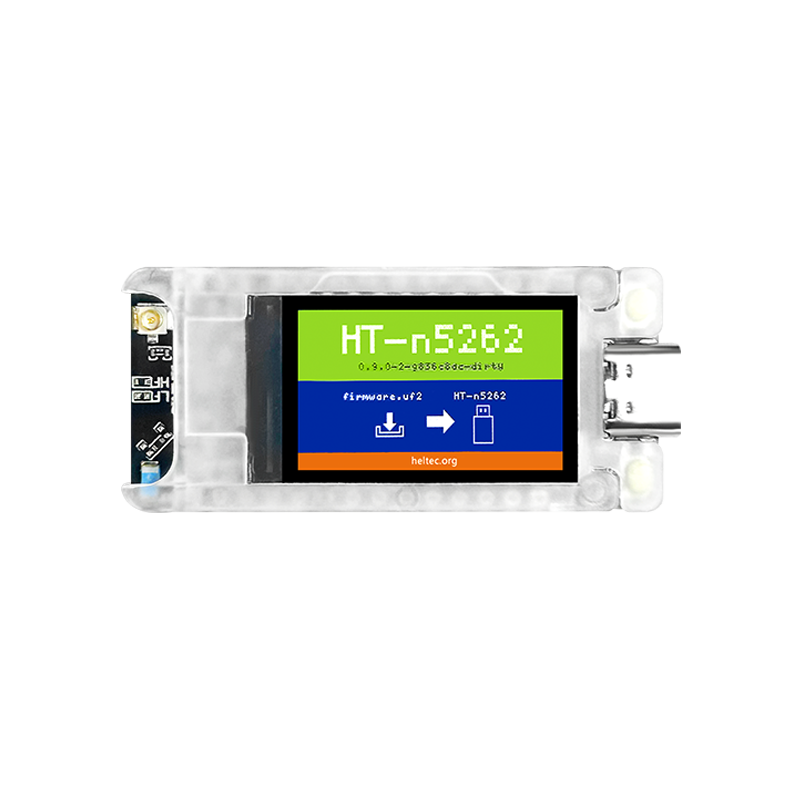

Guide · LoRa mesh
The best Meshtastic device to start with (2026)
Meshtastic turns cheap LoRa radios into an off-grid text-messaging mesh between you, your property and the people you choose. If you are wondering which node to buy first, the short answer from the project's own documentation is this: the best Meshtastic device for most people is a starter board built on a newer Semtech SX126x or LR11xx radio with an nRF52 processor — the RAK Meshtastic Start Kit (RAK19007 + RAK4631), a Heltec Mesh Node T114, or a Seeed Card Tracker T1000-E depending on whether you want a repeater, a fixed node or a tracker. Handheld typists will want the LILYGO T-Deck. Here is how those differ, and what to set before your nodes can hear each other.
Meshtastic is software, not a single product. The firmware runs on supported LoRa boards from RAK, LILYGO, Seeed Studio, Heltec, B&Q Consulting, Elecrow, muzi works, M5Stack and Raspberry Pi, per the official hardware list. That list also names the community favorites: the RAK Meshtastic Start Kit, the Seeed Card Tracker T1000-E, the Seeed Wio Tracker L1, the Heltec Mesh Node T114, the Nano G2 Ultra, the Station G2, and the LILYGO LoRa T3-S3. Any of those gives you a working node; the rest is about matching the board to the job.
Two chips decide most of it
Every Meshtastic device is two things: a microcontroller and a LoRa radio. Both matter.
On the radio side, the Meshtastic docs strongly recommend the newer Semtech SX126x or LR11xx radios and say the older SX127x series is no longer recommended for new purchases. The SX1276 inside some older boards still runs the firmware, but new money should go to SX1262 or LR1110-class boards. On the processor side, nRF52-based devices (the RAK4631, T-Echo, Heltec Mesh Node T114 and Seeed T1000-E) use less power and are "generally preferred for solar and handset applications" in the docs. ESP32-based devices cost less and add Wi-Fi, which is handy for management but draws more current.
Best starter kit: RAK WisBlock Meshtastic Start Kit
The RAK starter kit pairs the RAK4631 core module (nRF52840 + SX1262) with the RAK19007 second-generation base board. Per Meshtastic's device list, the RAK4631 gives you BLE 5.0 and no Wi-Fi; GPS is an add-on module such as the RAK1910 or RAK12500, and displays are optional too — the RAK1921 128×64 OLED or the RAK14000 2.13-inch e-ink. The base board is described as solar-ready and low-power.
Why pick this as your first node? Because it grows. A node that starts as a desk board can add a GPS module and become a mobile tracker, or gain a display for standalone use, all on the same ecosystem. It also pairs well with a small solar panel and battery if you later want a fixed repeater. RAK WisBlock Meshtastic starter kit on Amazon.

Best low-power fixed node: Heltec Mesh Node T114
Heltec's specifications put the Mesh Node T114 on an nRF52840 with an SX1262 LoRa radio and Bluetooth 5.0, no Wi-Fi, and power inputs that accept 5 V USB, a lithium battery or a solar panel — all per Heltec's product page. An optional 1.14-inch TFT display is available, GPS is optional, and Heltec notes the board is LoRaWAN-compatible as well.
That triple power input is the reason this board suits a permanent node: mount it, feed it a small solar panel, and let it relay traffic. One gotcha to know before buying: some T114 units have been reported to fail when sending long strings — more than about 50 characters — in the default Long-Fast modem preset (SF11, 250 kHz bandwidth). Heltec's own page cites meshtastic/firmware issue #4723 on that. If you plan to relay long messages through one, check whether your unit shows the bug before committing it to a wall. Heltec Mesh Node T114 on Amazon.
Best handheld: LILYGO T-Deck
The T-Deck is the Meshtastic device that people mean when they say lilygo meshtastic: an ESP32-S3FN8 with an SX1262, a built-in screen and a thumb keyboard, Wi-Fi and Bluetooth 5.0. Per the hardware docs, the base T-Deck has no GPS, while the T-Deck Plus and T-Deck Pro add GPS. The ESP32-S3 also means more power draw than the nRF52 handhelds, but for a pocket node you carry in bursts, that is usually fine.
The value of the T-Deck is independence. With the screen and keyboard on board, you can send and read messages without a phone in range — useful at a farm gate, on a trail, or anywhere the phone stays home. If you would rather have a phone-connected handheld with less battery drain, LILYGO's T-BeamSUPREME and T-Beam S3-Core pair the ESP32-S3 + SX1262 with built-in GPS, Wi-Fi and BLE 5.0, and the nRF52-based T-Echo adds an e-ink display, GPS and a battery in a molded case without Wi-Fi. LILYGO T-Deck on Amazon.
Best tracker: Seeed Card Tracker T1000-E
The Seeed T1000-E is an IP65-rated ready-to-go handheld tracker on an nRF52840 with an LR1110 radio and built-in GPS; it is one of Meshtastic's listed community favorites, and Seeed's SenseCAP Meshtastic devices ship pre-flashed. If your first project is "put a node on the truck, the dog, or the tractor," this is the shortest path. The same SenseCAP line includes the Indicator (a 4-inch touchscreen unit) and a Solar Node meant for long-term outdoor deployment. Seeed T1000-E on Amazon.
The settings that make or break a mesh
Buying the right board is half of it; the other half is configuration, and it trips up almost every new user. Region, modem preset, frequency slot and the rest are per-device LoRa settings. Two nodes only hear each other if they use the same region and the same modem preset — the bandwidth, spreading factor and coding rate package. Change the preset on one node and not its partner, and each becomes invisible to the other. The frequency slot for most regions is picked automatically from a hash of the primary channel's name, so leave it at 0 unless you know why you are changing it.
The region is also a legal question: LoRa bands differ by country (915 MHz in the United States, 868 MHz in much of Europe). Meshtastic maintains a region-by-country table in its configuration docs; pick your country from that and set it on every device. Setting the wrong region isn't just a connectivity mistake — it can put your transmissions outside the band your license allows.
Picks at a glance
| Device | Aim | Radio | Notes |
|---|---|---|---|
| RAK Meshtastic Start Kit (RAK19007 + RAK4631) | First node, grows with you | SX1262 | nRF52840, BLE 5.0, no Wi-Fi; GPS and display are add-on modules |
| Heltec Mesh Node T114 | Low-power fixed/solar node | SX1262 | nRF52840, USB/lithium/solar power; long-string firmware bug reported on some units |
| LILYGO T-Deck | Standalone handheld texting | SX1262 | ESP32-S3, screen + keyboard, Wi-Fi + BT 5.0, no GPS (Plus/Pro add it) |
| Seeed Card Tracker T1000-E | Vehicle/personal tracker | LR1110 | nRF52840, GPS built in, IP65, ships pre-flashed |
| T-BeamSUPREME / T-Beam S3-Core | Phone-connected handheld with GPS | SX1262 | ESP32-S3, GPS, Wi-Fi, BLE 5.0 |
Giving Meshtastic a job in a smart home
Meshtastic does not talk to Home Assistant the way Zigbee or Thread devices do; it is a messaging and telemetry mesh, not an automation radio. But it earns its place at the edges of a property: a solar node at the far gate reporting in, a tracker on equipment, a text channel that works when nothing else does. If you are comparing meshes before buying, read our Meshtastic vs MeshCore comparison, which covers routing, apps and hardware on both sides. For the wider picture of long-range radios around a house, start at our LoRaWAN gateway explainer and our roundup of LoRaWAN sensors for tanks, gates and outbuildings.
FAQ
What is the best starter Meshtastic device in 2026?
A device with a newer Semtech SX126x or LR11xx radio and an nRF52 processor, such as the RAK Meshtastic Start Kit (RAK19007 + RAK4631) or a Heltec Mesh Node T114. Meshtastic's docs strongly recommend SX126x or LR11xx radios over the older SX127x series for new purchases.
Is the LILYGO T-Deck worth it for a handheld node, and what does T-Deck Plus add?
The T-Deck is an ESP32-S3 node with a built-in screen and keyboard, so you can send messages without a phone. Note that the base T-Deck has no GPS; the T-Deck Plus and T-Deck Pro add GPS.
Which Meshtastic device uses the least power for a solar repeater?
nRF52-based devices such as the RAK4631, Heltec Mesh Node T114, Seeed T1000-E and T-Echo use less power and are generally preferred for solar and handset applications, per the Meshtastic hardware docs. ESP32 devices cost less and add Wi-Fi.
Why won't my Meshtastic nodes hear each other?
Nodes must use the same region and the same modem preset (bandwidth, spreading factor and coding rate). Both are per-device LoRa settings, so a mismatch on either one makes nodes invisible to each other.
What frequency should I set for my region?
It depends on where you live, for example 915 MHz in the US and 868 MHz in Europe. Meshtastic publishes a region-by-country table in its configuration docs; pick your country and use that region setting.
Does the radio chip really matter — SX1262 vs SX1276?
Meshtastic's docs strongly recommend the newer Semtech SX126x or LR11xx radios over the older SX127x series, and say the SX127x series is no longer recommended for new purchases.
Does the Heltec Mesh Node T114 have any known firmware quirks?
Some T114 units have been reported to fail sending long strings (over 50 characters) in Long-Fast mode (SF11, 250 kHz bandwidth); see meshtastic/firmware issue #4723, noted on Heltec's T114 page.
- Primary sources
- Meshtastic supported hardware; Meshtastic LoRa configuration; Meshtastic region by country; Heltec Mesh Node T114 product page
As an Amazon Associate, HA News earns from qualifying purchases.